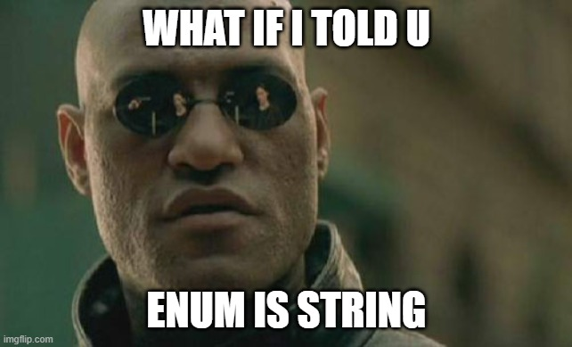
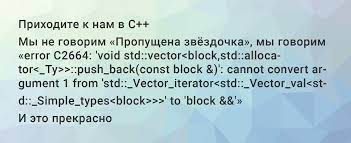
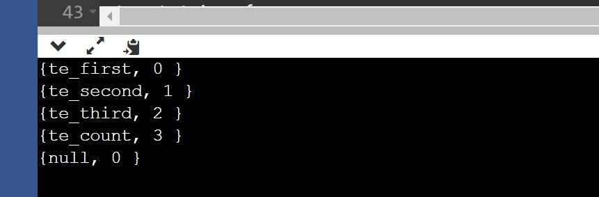

Получение имени типа, не важно это структура или перечисление, в C++ — проблема. То, что тривиально известно компилятору на этапе парсинга исходников, не получится перевести в человеко-читаемый вид в рантайме. Можно использовать std::type_info::name, который не является переносимым решением, потому что зависит от реализации манглинга в компиляторе. Некоторые компиляторы (например, MSVC, IBM, Oracle) создают «удобное» имя типа, а вот gcc и clang возвращают искаженное имя, котороe можно преобразовать в удобочитаемую форму с помощью дополнительных функций, например abi::__cxa_demangle. Чтобы вся эта магия работала, нужно подключить RTTI, который тоже не всегда доступен, а иногда и вообще-то вреден, потому что сжирает драгоценную производительность.

В языке программирования C++ отсутствует какая-либо реальная форма рефлексии, и только в C++20 появились пропозалы (reflexpr), чтобы добавить в язык нативные средства для этого. Вот как-то так выдает clang данные по классам.
Показать код
#include <iostream>
#include <typeinfo>
#include <cxxabi.h>
struct Simple { };
struct Base { virtual ~Base() = default; };
struct Derived : Base {};
enum Enum { one = 4, two = 2 };
int main() {
Base b1;
Derived d1;
Simple c1;
Enum eenum;
const Base *pb = &b1;
std::cout << typeid(*pb).name() << '\n';
pb = &d1;
std::cout << typeid(*pb).name() << '\n';
std::cout << typeid(eenum).name() << '\n';
std::cout << typeid(c1).name() << '\n';
int status;
char *realname;
realname = abi::__cxa_demangle(typeid(*pb).name(), 0, 0, &status);
std::cout << typeid(*pb).name() << "\t=> " << realname << "\t: " << status << '\n';
}
$> 4Base
7Derived
4Enum
6Simple
7Derived => Derived : 0Т.е. компилятор все эти данные хранит в памяти, и мы можем использовать их, чтобы достать и обработать нужным нам образом.
Можно ли получить тип через макрос?
Ну в принципе можно, только пользы от этого будет немного. Повторюсь, не существует каких-либо явных языковых конструкций, дающих имя типа вне typeid, поэтому придется искать другие возможности. Простейшее решение будет превратить в строку сам тип.
Показать код
#define TYPE_NAME(x) #x
std::cout << TYPE_NAME(std::string) << std::endl;Вы понимаете, конечно, что будет напечатано в консоль, только это все будет работать для явно указанных типов. Макросу все равно, что превращать в строку, хоть слона, хоть моську. Поэтому ломается уже на примере чуть посложнее.
Показать код
template <typename T>
void print(int x) {
std::cout << TYPE_NAME(T) << std::endl;
std::cout << TYPE_NAME(decltype(x)) << std::endl;
}
$> T
decltype(x)Можно ли получить тип через шаблон?
Показать код
template <typename T>
void bad_function();Если вы когда-нибудь ошибались в написании шаблона, то наверняка видели большую простыню текста ошибки, в конце которой было про bad_function<foo>(), т.е. компилятор достал и имя шаблонной функции, и имя её параметра.

Здесь была шутка про плюсы.
Может ли это работать вне вывода ошибок компилятора? Исследуя возможность достать имя типа, или энама, или значения энама в процессе компиляции, я наткнулся на сервисную переменную __function__. Что по этой функции говорит документация? Компилятор определяет в удобном для него виде содержимое в месте объявления, например для вывода ошибок или предупреждений.
Документация
__FUNCTION__ Defined as a string literal that contains the undecorated name of the
enclosing function. The macro is defined only within a function. The __FUNCTION__
macro isn't expanded if you use the /EP or /P compiler option. For an example of
usage, see the __FUNCNAME__ macro.
__PRETTY_FUNCTION__ is a gcc extension that is mostly the same as __FUNCTION__,
except that for C++ functions it contains the "pretty" name of the function including
the signature of the function. Visual C++ has a similar (but not quite identical)
extension, __FUNCSIG__ .(n1642) Эта скрытая переменная, которая существует внутри места вызова как const char*. Она также содержит дополнительную информацию о перегрузке и шаблонах, давайте посмотрим, что можно с этим сделать.
Показать код
struct Simple { };
template <typename T>
std::string test() {
return __PRETTY_FUNCTION__;
}
int main() {
std::cout << test<std::string>() << std::endl;
std::cout << test<Simple>() << std::endl;
}
$> std::string test() [with T = std::__cxx11::basic_string<char>; std::string = std::__cxx11::basic_string<char>]
std::string test() [with T = Simple; std::string = std::__cxx11::basic_string<char>]C такой логикой уже можно работать. Попробуем написать простой парсер, который вытаскивает из этой строки нужные данные. Для этого можно использовать функции класса string для поиска подстроки. Поиск выглядит немного тяжеловатым и пока не работает на этапе компиляции, но мы обязательно к этому придем.
Показать код
struct Simple { };
template <typename T>
struct TypeNameHelper {
static std::string TypeName(void) {
const auto prefix = std::string{"[with T = "};
const auto suffix = std::string{";"};
const auto function = std::string{__PRETTY_FUNCTION__};
const auto start = function.find(prefix) + prefix.size();
const auto end = function.rfind(suffix);
const auto result = function.substr(start, (end - start));
return result;
}
};
template <typename T>
std::string TypeName(void) {
return TypeNameHelper<T>::TypeName();
}
$> std::__cxx11::basic_string<char>
SimpleЕще стоит убедиться, что компилятор не убирает полное имя функции при сборке с оптимизациями, иначе можем получить пустые строки с ключами -O2/3. На сборке с оптимизациями все строки на месте, с -O3 (пример) тоже. Немного изменим код, чтобы можно было просматривать вывод для разных типов данных и сохранять его для работы.
Показать код
enum test_enum { te_first, te_second, te_third, te_count };
int main() {
std::cout << TypeName<test_enum>() << std::endl;
}
$> test_enumВот в выводе уже появился читаемый тип энама, осталось вытащить его значение. Для этого надо добавить в шаблон еще один параметр со значением энама, магии шаблонов еще нет, она будет чуть позже.
Показать код
template <typename T, T V>
struct TypeNameHelper {
static const char* TypeName(void) {
static const size_t size = sizeof(__PRETTY_FUNCTION__);
static char typeName[size] = {};
memcpy(typeName, __PRETTY_FUNCTION__ , size - 1u);
return typeName;
}
};
template <typename T, T V>
const char* TypeName(void) {
return TypeNameHelper<T, V>::TypeName();
}
enum test_enum { te_first, te_second, te_third, te_count };
int main() {
std::cout << TypeName<test_enum, te_second>() << std::endl;
}
$> test_enum; T V = te_firstТеперь, возвращаясь к задаче из заголовка, кроме самого типа нужно получить и все значения; обычно чтобы сформировать некоторую последовательность и привести её к массиву используется std::integer_sequence и fold expressions. Так, например, можно заполнить массив натуральными числами. Конечно, это немного ломается, если энам сделан с «дырками».
Показать код
template<typename T, T... ints>
void print_sequence(std::integer_sequence<T, ints...> int_seq) {
std::cout << "The sequence of size " << int_seq.size() << ": ";
((std::cout << ints << ' '), ...);
std::cout << '\n';
}
int main() {
print_sequence(std::make_integer_sequence<int, 20>{});
}
$> The sequence of size 20: 0 1 2 3 4 5 6 7 8 9 10 11 12 13 14 15 16 17 18 19Собирая все мысли в кучу, начинаем продумывать возможное решение:
- развернуть энам от первого до последнего элемента в массив через std::integer_sequence;
- пройти по полученному массиву и вызвать параметризированный TypeName для каждого элемента, сохранить или обработать вывод;
- сформировать набор структур { имя, значение } для итерации по элементам.
Разворачиваем значения энама в массив (несложно)
Чтобы не утомлять читателя проектированием и отладкой, буду выкладывать уже готовые классы и пояснять отдельные моменты. Как оказалось, убедить компилятор превратить энам в строку не столько сложно, сколько долго в плане протаскивания параметров через десяток шаблонов от шаблонов. В конечном итоге я добился работы, но только для кланга и студии, c gcc, увы, не получилось.
- count_values — простой рекурсивный подсчет числа значений в энаме;
- make_tokens — формирует массив значений из энама и копирует их в представление вида { имя, значение };
- tokens — содержит все значения из энама и их текстовое представление;
- make_name — c помощью __PRETTY_FUNCTION__ превращает значение в строку;
- token_holder — сервисный класс, чтобы скрыть работу с шаблонами.
Показать код
struct token {
const char * name;
s32 id;
};
template<typename enum_type, enum_type begin, enum_type end>
struct token_holder {
constexpr static inline int count_values(enum_type type) {
return (type != end)
? count_values((enum_type)(s32(type)+1))
: (s32(type)+1);
}
static constexpr u32 N = count_values(begin);
using tokens = std::array<token, N+1>; // because have {0, 0} in last element
template<typename e_enum_type, e_enum_type enum_value>
constexpr token make_name() {
return { enum_name<e_enum_type, enum_value>().name(), enum_value };
}
template<typename e_enum_type, u32... Indices>
constexpr tokens make_tokens_helper(std::integer_sequence<u32, Indices...>) {
tokens ts = { make_name<e_enum_type, (e_enum_type)Indices>()... };
ts[N] = {0, 0};
return ts;
}
template<typename e_enum_type>
constexpr tokens make_tokens() {
return make_tokens_helper<e_enum_type>( std::make_integer_sequence<u32, N>{});
}
constexpr operator const token *() const { return values.unsafe_ptr(); }
constexpr token *data() const { return values.unsafe_ptr(); }
constexpr token_holder() : values{make_tokens<enum_type>()} {}
tokens values;
};Превращаем значение энама в строку (посложнее)
Смотрим, во что превращается завернутый в шаблон энам, например вот такое
Вывод компилятора
static const char *enum_name<test_enum, te_first>::helper_name()
[enum_type = test_enum, enum_value = te_first, value = te_first]и ищем последнее вхождение символа «=», копируем все содержимое до конца. static-квалификаторы тут нужны, чтобы значения оставались в памяти после выхода из функции.
Показать код
template<typename enum_type, enum_type enum_value>
class enum_name final {
// Helper function that directly takes an enum_type value template parameter to get the name of the classes template enum type value as a string.
template <enum_type value>
static const char* helper_name() {
// Clang compiler format: __PRETTY_FUNCTION__
// = static const char *enum_name<ENUM_TYPE_NAME, ENUM_TYPE_NAME::ENUM_VALUE_NAME>::helper_value() [enum_type = ENUM_TYPE_NAME, enum_value = ENUM_TYPE_NAME::ENUM_VALUE_NAME, value = ENUM_TYPE_NAME::ENUM_VALUE_NAME]
// static const char *enum_name<test_enum, te_first>::helper_name() [enum_type = test_enum, enum_value = te_first, value = te_first]
// MSVC compiler format: __FUNCSIG__
// = const char *__cdecl enum_name<enum ENUM_TYPE_NAME,ENUM_VALUE>::helper_value<ENUM_TYPE_NAME::ENUM_VALUE_NAME>(void)
// const char *__cdecl enum_name<enum test_enum,0>::helper_name<te_first>(void)
static const unsigned long long function_name_length = sizeof(__PRETTY_FUNCTION__);
static const std::string function_name(__PRETTY_FUNCTION__);
static const unsigned long long type_name_start = function_name.rfind('=') + 2;
static const unsigned long long type_name_end = function_name_length - 2;
static const unsigned long long type_name_length = type_name_end - type_name_start;
static const std::string type_name_string = function_name.substr((size_t)type_name_start, (size_t)type_name_length);
return type_name_string.c_str();
}
public:
static const char* name() { return helper_name<enum_value>(); } // Get the name of the classes template enum type and value as a string.
};В таком виде этот код уже выводит значения энамов (пример).

Избавляемся от string (не очень сложно)
Можно сделать через std::string_view, но это будет не так интересно. От класса string понадобились только функции хранения символов, rfind и substr. __PRETTY_FUNCTION__ существует на момент компиляции, так что мы можем написать небольшой сервисный класс, который а) хранит строку и б) без динамической аллокации, ну и напишем нужные функции для работы с подстрокой. Воспользоваться memcpy или циклами в constexpr для копирования и поиска данных не получится, но цикл можно превратить в рекурсию с параметром, реализовав таким образом функцию rfind (это ж компайл-тайм, кто его считает, это время на разворачивание шаблона). А вот substr я сделать не смог, пришлось гуглить решение (compile-time substring) и смотреть, как сделано в std::string_view. Ну и добавим c_str(), куда же без этой легендарной функции в плюсах. constexpr в вызовах нужен, чтобы компилятор смог подсчитать размеры массивов при инстанциации шаблонов, в местах вызова на этапе компиляции.
Показать код
template <unsigned long long length>
class string_literal final {
const char string[length];
public:
template<unsigned long long... indexes>
const string_literal(const char(&raw_string)[sizeof...(indexes)], std::integer_sequence<unsigned long long, indexes...> index_sequence) : string{ raw_string[indexes]... } {
static_cast<void>(index_sequence);
}
constexpr const char* c_str() const { return this->string; }
template<unsigned long long substring_start, unsigned long long substring_length, unsigned long long... substring_indexes>
constexpr const string_literal<substring_length + 1> substr(std::integer_sequence<unsigned long long, substring_indexes...> substring_index_sequence) const {
static_cast<void>(substring_index_sequence);
return string_literal<substring_length + 1>({ this->string[substring_start + substring_indexes]..., '\0' }, std::make_integer_sequence<unsigned long long, substring_length + 1>{});
}
constexpr unsigned long long find(const char character, const unsigned long long starting_index = 0) const {
return ((starting_index >= length)
? 0xFFFFFFFFFFFFFFFF
: ((this->string[starting_index] == character)
? starting_index
: this->find(character, starting_index + 1)));
}
constexpr unsigned long long rfind(const char character, const unsigned long long starting_index = length - 1) const {
return ((starting_index == 0)
? ((this->string[starting_index] == character)
? starting_index
: 0xFFFFFFFFFFFFFFFF)
: ((this->string[starting_index] == character)
? starting_index
: this->rfind(character, starting_index - 1)));
}
};Теперь, собрав все части головоломки вместе, можно написать решение для превращения enum'а в строку. На выходе получается массив, по которому можно поитерироваться в поисках нужного значения, и также он содержит строковое представление его имени.
Показать код
enum test_enum { te_first, te_second, te_third, te_count };
int main() {
const token_holder<test_enum, te_first, te_count> test_tokens;
for (auto &s: test_tokens.values)
std::cout << "{" << (s.name ? s.name : "null")
<< ", " << s.id << " }"
<< std::endl;
}
$> {te_first, 0 }
{te_second, 1 }
{te_third, 2 }
{te_count, 3 }
{null, 0 }Вместо выводов
Никакого мошенничества, только черная магия. Хотя может не быть какого-либо встроенного средства для получения полного имени типа объекта во время компиляции, можно подхачить сам язык (я обожаю плюсы за то, что можно творить такую дичь), чтобы достигнуть нужного результата. Было ли это полезно и потащу ли это в прод — вряд ли; было ли это интересно — однозначно. Если нужно готовое решение, поищите magic_enum на гитхабе, но ему будет нужен C++17 для работы, я же пока не нагулялся по землям драконов 11/14 стандарта.
З.Ы. код тут — github.com/dalerank/tokenum.
← Все статьи